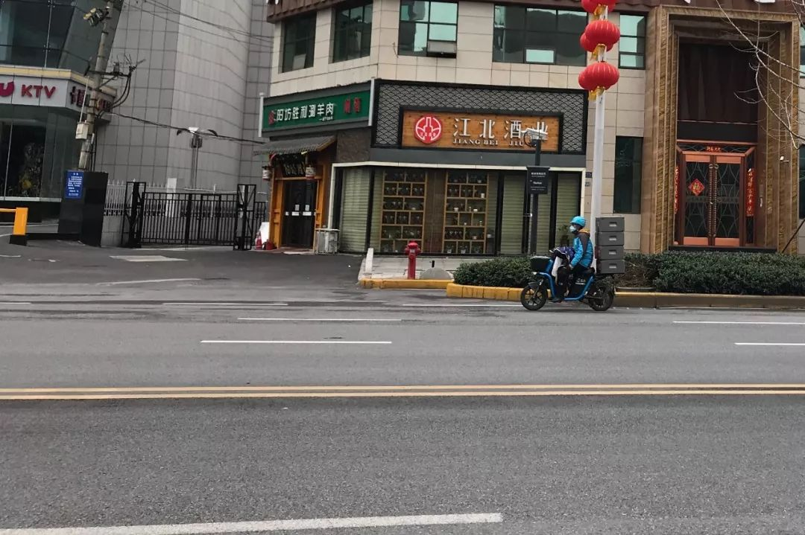
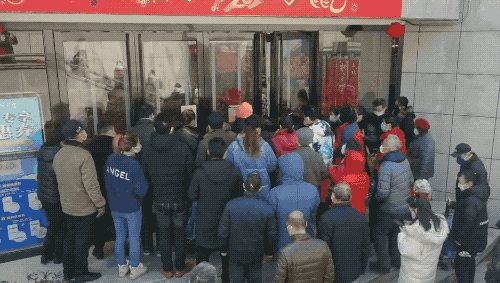
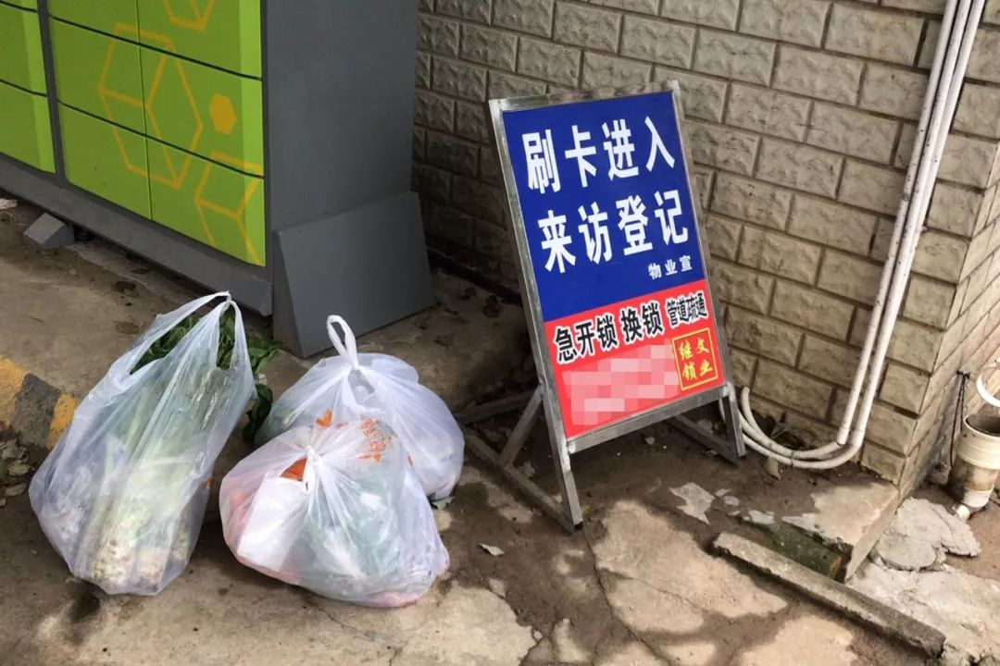
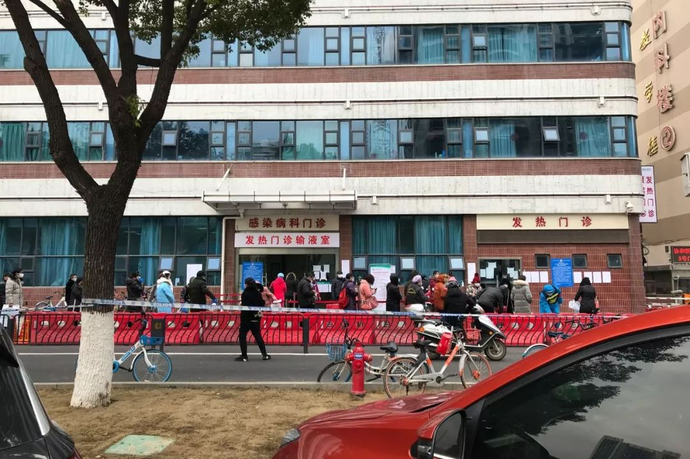
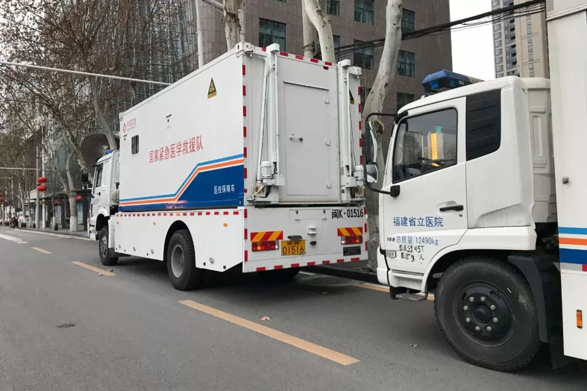
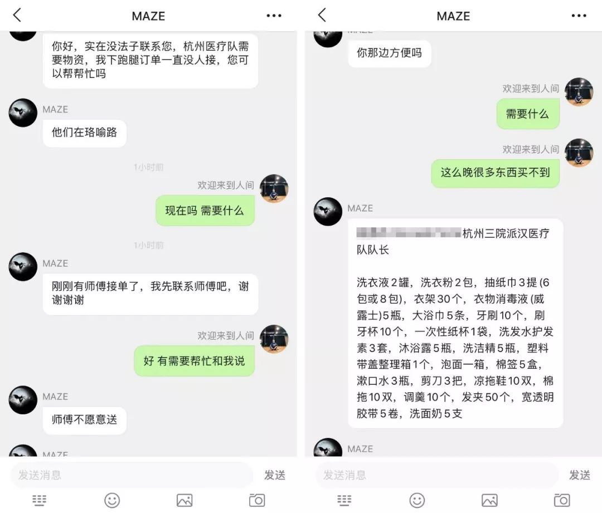
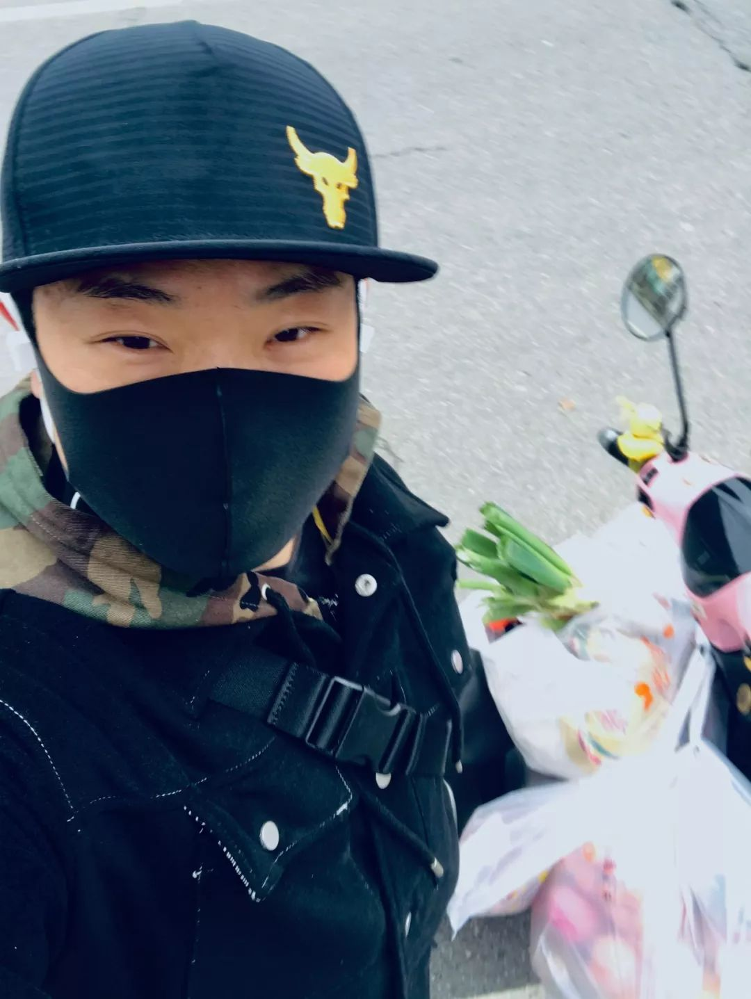
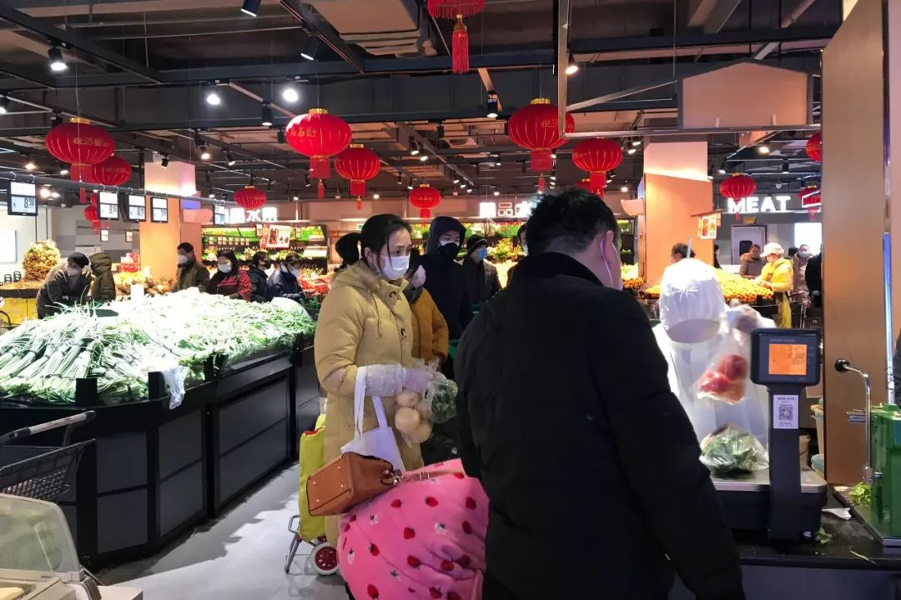
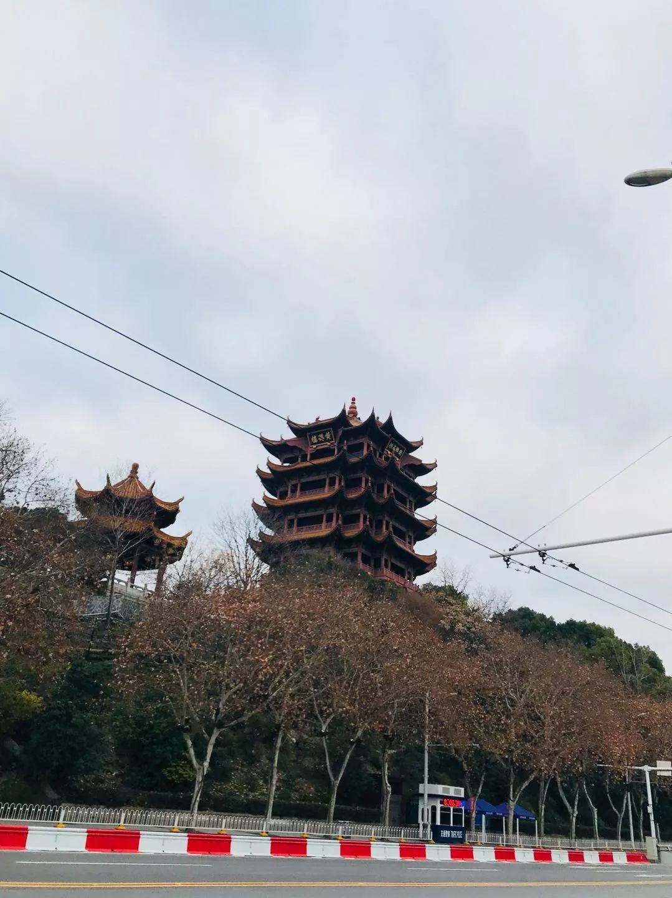

在人间丨武汉封城第一天
原文链接 备份链接 2020年1月23日凌晨2点，武汉市宣布自10时起交通封城，尽管很多人还在睡梦之中，在8个小时的窗口时间内，仍有很多人选择连夜出城。更多的人，则留了下来，有的人别无选择，有的人则担心自己无论去哪里都是潜在的传播者。一位 …

健身教练辛野和他送外卖的电动车
90后健身教练辛野，
在武汉封城之后，
苦于市民买日常用品非常不便，
骑手平台订单爆满也没有人接，
于是，他下载了骑手软件，
成为一名临时外卖员。

武汉街上还在奔波的人就是外卖员，辛野拍摄
他会优先接一些看着就非常急需的订单，
每个单子、简略文字的背后，
都是一个个武汉家庭的生存现状：
焦急搜寻婴儿奶粉的新手妈妈，
无法出门买日常用品的隔离家庭，
在医院等着消毒液、酒精的患者或家属……
辛野尽自己所能，解决下单客人们的不同需求。
每单酬劳在20块钱左右，
他每天骑到电动车没电才回家，
“一天没吃饭没喝水，
我在想，今天跑了七八单，
又减少了七八个家庭出门被感染的风险。”
***************************自述 ******************************************辛野****************** ******编辑 ******************************倪蒹葭***************


辛野的职业是健身教练
我是内蒙古人，从大学开始在武汉生活了10年。
2月1号晚上，我下载了一个骑手软件，注册之后上传身份证，填写有无高烧疾病等问卷调查；再把电动车充上电，当时下着雨，我戴上棒球帽、套上外套，就出门了。开始了我的临时外卖员生涯。
封城之后，经常看到人们在群里说，“出不了门，没办法买菜”，“家里有小孩要看管，奶粉都快吃不上了” ，“下了单能不能接单全凭运气”。我有个住在江汉区的朋友，因为家人感冒，担心传染不敢出门买菜，却下单3天都没人接。
我看了心里很难过，决定也出一份力，为不能出门的人送日常用品。我做了7年的健身教练，身体好免疫力强，而且我一个人住，也不担心会传染给别人。
精力有限，我会筛选出那些一看就很急需的订单，帮他们去买。这些单子背后，是一个个武汉家庭窘迫的生活现状，和最急的需求。
我的外卖单中，高居前五位的词是：
1、排骨
2、青菜
3、挂面
4、无接触配送
5、谢谢，慢慢骑

辛野装得满满的小车
困守家中、买菜难的群体：
免疫力低下的老年人、隔离家庭
我接的单子大部分是帮家庭买菜，一开始我以为是轻松的事。但其实超市人多、嘈杂，人们乱哄哄地在抢。
我每天10点开门的时候进超市，买东西和排队要花6个小时，下午4点才能出来开始配送，比平时自己逛超市还尽心尽力，尽量买全。
我住在武汉的洪山区，这边主要住着打工者和老年人，很多单子都是子女帮父母下单买菜，备注里写老人的家，要求无接触配送。
老年人免疫力低下，不敢出门，子女又跟他们不住在一起，所以很担心。我会跟小区门卫大爷商量，老人不方便下来拿，尽量帮他们送到门口，然后拍照给子女看。

辛野和隔离期顾客的对话

骑共享单车给隔离家庭送菜
2月6号送的最后一单，他告诉我他们是接触了疑似感染者的隔离家庭，东西放在门口的快递柜就行。自从我答应给他送菜，他就一直在微信上感谢我。
他因为隔离久了，不知道超市的行情，一开始说要鲈鱼鲫鱼，我说能有冰冻带鱼就很好了，这个家庭我就尽量给他买全，买到了排骨、五花肉、香菇、千张这些紧俏物资，还有各种水果。
当时车子跑了一天没电了，我扫了一辆共享单车，车头一大袋菜，左边右边又是一大袋菜，骑了9公里送去，又9公里骑回来，然后把没电的车推回家。
也有因家里有小孩需照顾，而无法出门的情况。接单之后，客人打电话来，问能不能直接送到门口，电话里就听到这位妈妈身边两三岁小孩的哭闹声。

封城第8天，武汉某超市刚开门的情景，熊琪明拍摄
超市是封城焦虑的缩影
我发现，2月初开始，超市买菜的人越来越多。一方面因为刚封城时囤的物资差不多吃掉了，一个家庭顶多囤上半个月食物；另一方面，大家都不知道封城什么时候会结束，刚开始可能以为7、8天就不会封了，现在看不到尽头。
所以越来越慌张，买越来越多东西。
有太阳的天气出来买菜的人多，真的是要靠抢，阴冷天相对好一点，阴天称重排队50分钟，晴天要一两个小时。挂面、鸡蛋最容易没有，要最先去买；要在抢菜的间隙去抢排骨，不能等买完菜再去。


辛野的购物篮
有时候我排了长队，把菜、排骨都称重标价装好了，放在一旁的购物车里，但转头，就有人把我购物车里的食物拿走了。不仅是我，我还目睹了很多次别人购物车里称好的东西被拿走。
超市人手非常不足，还要匀出人手消毒、测体温，不能够及时去货仓拉菜，好不容易拉出货仓，还没等到展示架，一些紧俏的蔬菜就抢没了，连菜叶子都看不见。
超市上菜的阿姨，到了下午脾气特别暴躁，因为根本没时间吃饭，其实大家都很难。

1月31号武汉市民熊琪明拍摄，他表示2月8号再去超市，蔬菜供应缓解一些，肉类仍然紧张
排骨，没有时间给你切，都是一扇一扇卖，一扇大概两斤，100多块钱；五花肉37.8块，里脊肉40块，西红柿8.9块，四季豆18块。前段时间几个超市的鸡蛋也断货了，8号才又看到。
从买菜的状态能看出大家的焦虑，为什么大家焦虑呢？是因为信息的不对称，大家都说往武汉捐东西，也不知道到哪去了，菜价也翻倍了，而且没有人知道封城到底会持续多久。
市民们哪怕没有被感染，也会被这种状况，渐渐地耗费了精神头，累积出戾气和暴躁。
比如8号下午，一位在超市买好菜的中年男人，用自助机结账的时候一直出现机器小故障，他几乎崩溃了，把买的东西全扔在地上，用武汉话骂，然后又全都捡起来，去人工收银台排长队。看到这些我会很难过，但也只能做自己力所能及的事。


辛野把买好的食物放在小区门口
别人不知道我是在配送，每天都有人对我买这么多东西表示不满。
真正的外卖小哥在超市里看到我没穿制服，但又不像是自己买菜，就会问我是不是帮人跑腿，单子多少钱？他们每天可以接7、8单，会在平台挑些需求少的单子来接。
我一单下来通常就有几十斤，我每天能接5单样子，帮5个家庭买好菜再出来，电动车停的位置距离超市还有300多米，我拎不动全部东西，每天就一点点搬，一点点挪到电动车上。

2月8号协和医院的发热门诊排着长队，辛野拍摄
住院的患者：
刚需消毒液和酒精、口罩，太难买了
2月3号晚上，我送了一天菜，已经回到了家，刚吃了碗泡面，7点多看到一个地址是武汉三医院的单子，需要买口罩、喷壶、10瓶酒精和10瓶84消毒液。
那肯定是患者或患者家属，我没想接，因为药店肯定已经关门了。但是坐了20多分钟，我坐不住了。
电动车骑了一天已经没电，我就扫了一辆自行车，把平时去的药店都转了一圈，骑了3、4公里，一家店也没开，后来骑到一个偏远的小巷子里，灯特别暗，一家药店开着，估计老板就是住在楼上的那种，老板也不肯多卖给我，只买到了2瓶消毒液、酒精和酒精棉。
然后又骑了5、6公里的自行车，把东西送到住院部的护士站，通知客人来拿。

援助武汉的医疗车
还有一次是晚上送到武汉肿瘤医院，我也已经回到了家，看见单子上写要消毒液、酒精、口罩。我想起来刚刚送东西的时候看到一间小药店，我赶紧骑了5公里的自行车过去，药店关门了，还好门口贴了电话，说有急事联系，我等了20分钟，一个男人过来给我了酒精和消毒液。
又骑了5公里去送，下单客人住在医院4楼，他从窗口用绳子放下了一个小篮子，我把东西放进去，他就吊上去，我们全程没见过面。
这几天跑在路上是真的很清冷，只有几辆贴着“驰援武汉”条幅的车开过，医院门口的发热门诊一直从早到晚排着长队。街上还在奔波的人，就是像我这样送外卖的。


一位需要奶粉纸尿裤的妈妈下单
被忽略的母婴群体：
“总不能让婴儿饿着”
2月5号傍晚，我的电动车马上要没电了，看到有一单需要7罐奶粉、辅食、尿不湿这些，跑腿费不高，而且买奶粉需要自己垫付几千块，所以没有人接。
我观察了20多分钟，还是接了，因为总不能让婴儿饿着。
我不知道奶粉在哪买，不知道辅食是什么，这个妈妈就告诉我平时是在哪里买的。
母婴店老板看到我很惊讶，问我跑这单多少钱，我说也不多，她说，“我们有好多单子送不出去，你要是不嫌麻烦，就留个电话。”我就让她随时联系我。
我没有像那些医务人员那么专业，可以帮病人，但我想尽我所能帮助困在武汉的人们，他们是英雄，用自己的行动践行着居家隔离，忍受着心之惶惶。


没有开门的药房，辛野拍摄
惶恐的普通感冒人群：
开着的药店越来越少
在街上奔波的这几天，我发现开着的药店越来越少，小区开的门越来越少，到现在几乎全封闭了，环卫工人还在打扫卫生，街道依然干净整洁。
2月5号下午，我还在超市买菜的时候就看到一个单子一直没人接，要求买白加黑、阿莫西林，还有些水果青菜，强调放在楼下，不要送上来。我想他一定是感冒了。
我担心再没人接，药店就要关门，就赶紧接了。这个客人我给他买得特别全，白加黑现在需要身份证才能买，我没有带，就跑了两家药店买到三九、可立克、阿莫西林。我在的超市已经没菜了，又去其他超市找，看到绿叶菜都给他买了。然后优先给他配送。这单是他妈妈下来拿的，对我道谢，说辛苦了。
客户找到一位外卖小哥不容易，所以经常会打电话来让我给他带些别的，比如有一次我已经买完菜了，客人问能不能再带一个体温计的纽扣电池，如果让我带烟我就不一定去，但我怕他测不了体温，又跑了一段路去买。

辛野和医疗队的聊天截图
援助武汉的医疗队：
没法买生活物资
最近因为我把送外卖的经历发在豆瓣上，2月11号，杭州三院派汉医疗队通过豆瓣联系上我，当时已经接近晚上8点。他说实在没法子了，下了跑腿订单一直没人接，找我帮忙。他列了20多种物资需求给我，比如洗衣液、泡面、衣架、发夹等等。
这种单子说实话想赚钱的人都不会接，因为太复杂，买一下几个小时过去了，要挑选、排队，一家超市肯定买不齐。
我是很想帮忙，但因为已经8点，商店基本都关门了，这些物资买不到，所以暂时还没有给他们送去。
我想有这些物资需求的援助武汉医疗队一定不在少数。

“我一个人每天代替了
7、8个家庭的人口流动，很开心”
因为我对小区和路不熟，加上疫情下很多路和门都封闭了，导致经常走冤枉路，迟到了好几次，人们也很可爱，从不会因此有怨言，还叮嘱我路上小心，照顾好自己。
送外卖以来，我都是早上吃一碗方便面出门。在路上，根本没工夫吃饭喝水，晚上回到家，才终于能上个厕所，再吃一碗方便面，放点生菜小白菜在里面烫一烫。前天开始就没有菜了，我一忙就忘了买。

辛野的骑手页面
外卖小哥都有休息站，可以去吃饭上厕所，给车充电，但是我没有参加他们的线下培训，也没有那个衣服帽子，所以也去不了。每天都是车没电了才回家，最远一次是从华师园北路推车十几公里，城市特别安静，连猫狗都看不见，到家已是12点多。
第一天晚上挣了40多块，之后每天都是挣了100多块钱。等平台的钱能提现，我也捐出来。

辛野拍摄，超市员工在称重
我的防护是普通的黑色口罩，因为没有买到医用外科口罩，每天回来洗洗消毒，第二天接着用。2月8号，朋友知道了我在做这个，送了我一包KN95口罩。
早上去超市的时候，我还是很有干劲，但因为超市人群密集又封闭，到下午我就会有点头痛，其实也挺害怕的，担心是不是发烧了。
因为我一直健身，对自己身体的感知能力比较强，所以每天早上会评估一下自己的状态，觉得OK，我才会去干这件事。
晚上吃饭的时候，我就是在想：今天我一个人代替了7、8个家庭的人口流动，减少了他们感染的可能，很开心。
睡觉前，一想起第二天早上8点要起来给约好的几个家庭买菜，突然就觉得浑身充满干劲，起来又做好几组俯卧撑。

辛野路过空荡荡的黄鹤楼，平时游人如织

辛野把送外卖的经历发在豆瓣上，南京网友发来照片
武汉封城之后，朋友圈都在转发“我的城市生病了”。我觉得做些什么，它才能好起来。
我打过电话去火神山、雷神山的工地，问是否需要工人，但专业的技能我也不懂，所以是一腔热血，别人不要我；后来群里面说需要帮忙运捐赠的物资，但可惜我又没有车，帮不上忙；成为外卖员之后，终于找到自己可以做的事情。
我在武汉念完大学之后，也去过深圳、广州，去温州创业过，但兜了一圈还是决定回来。虽然武汉工资比较低，就业压力大，但我最喜欢武汉的“真”，有一种嬉笑怒骂的市井气息，很有人情味的城市。
现在，全国很多省市都有封城举措，人们的日常生活肯定有诸多不便。但大家都希望自己的城市能好起来，为它做点什么，不管是大是小。


疫情依然严峻，针对以下人群，
我们正在寻找采访对象！
#我在疫情一线#
不论是您是在湖北还是全国其他地区，只要您是奋战在一线的医护人员、后勤补给人员、记者、患者或患者家属，我们希望听到您的见闻和最迫切的需求。
#我的武汉现场#
如果您正身在武汉，如果您愿意讲述在“封城”后的实地体验见闻，我们希望把它传递给更多人。
请通过以下方式联系一条编辑，我们期盼您的消息！
一条编辑部邮箱editor@yit.com
或直接在文章下留言。
请您留下所在地、职业，大致讲述您的见闻与故事，如合适我们将尽快与您取得联系，进行采访！
如有图片也欢迎一并发来。
▼


原文链接 备份链接 2020年1月23日凌晨2点，武汉市宣布自10时起交通封城，尽管很多人还在睡梦之中，在8个小时的窗口时间内，仍有很多人选择连夜出城。更多的人，则留了下来，有的人别无选择，有的人则担心自己无论去哪里都是潜在的传播者。一位 …
原文链接 备份链接 早上五点半睁眼，手机通知中心一长串消息，很多都写着“武汉10点封城”，以为自己没睡醒，看花眼，封城也太突然，前天晚上没有丝毫风声，倒像拍脑子的临时决策。点开新闻发现真的全线封锁，急忙从床上跳起来，睡意全无，继续刷手机的 …
原文链接 备份链接 一场新冠肺炎疫情打乱了所有人的生活节奏，医生不眠不休走上抗疫最前线，企业加班加点生产防护物资，民间组织合力协调各方力量，也有热心人力所能及为抗疫出一分力 文｜《财经》记者 马霖 编辑｜余乐 整个春节期间，武汉的街道不 …
原文链接 备份链接 除夕前夜，因疫情蔓延，武汉宣布封城，机场、火车站、市内公共交通停闭，江城困围。封城以来，许多武汉人都承受着分离的苦楚，担心年迈独居的父母买不到菜，惋惜爱人最需要的时却不能陪在身边，常年在外工作的父亲错过仅有的看望孩子的 …
原文链接 备份链接 今天是武汉每日书第八篇。有在汉口的市场销售人员，在武汉的自由职业者，在黄石的编剧……共同书写他们在这次疫情中所经历的生活片段，关于日常饮食、亲情反思和人间观察。 **01 ** 封城时刻， 如何点一份让人放心的外卖 …